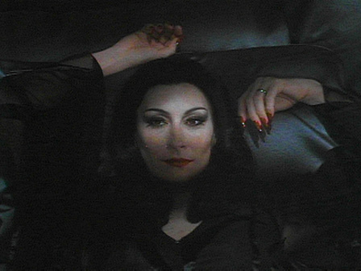
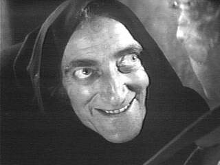
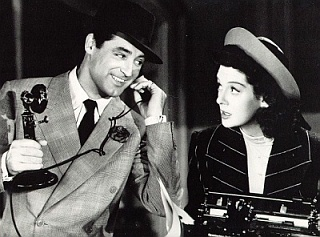
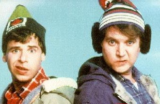
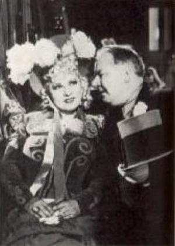

Favorite Comedies
Obviously The Marx Brothers are my favorite comics, and Animal House is my favorite comedy but they have their own sections on The Movie Page so they aren't included here.

    |
The Sting (1973) "Luther said I could learn from you. I already know how to drink" Let It Ride (1989) "I'm having a very good day" Young Frankenstein (1974) "That's Fronkensteen" Strange Brew (1983) "You Hoser!" Porky's (1982) "OOOOWWWWOOOOOOO" Robin Hood - Men in Tights (1993) Rabbi Tuckman! Guffaw!! Arsenic and Old Lace (1944) "CHARGE!!" Smokey and the Bandit (1977) "I take my hat off for only two things" The Muppet Movie (1979) "A bear in his natural habitat... A Studebaker." History of the World: Part I (1981) "It's good to be the king" A Funny Thing Happened on the Way to the Forum (1966) "You run with Mucus" Fargo (1996) "Oh Yah?" My Little Chickadee (1940) "Uh, is this a game of chance?" "Not the way I play it, no." My Cousin Vinny (1992) "What's a Yute?" My Favorite Year (1982) "Damn you! I'm not an actor, I am a movie star!" Addams Family, The (1991) "Don't torture yourself..." Modern Times (1936) Charlie Triumphs and gets Paulette Goddard too. His Girl Friday (1940) Hooper (1978) "Well...as usual Roger...you're wrong." Never Give a Sucker an Even Break (1941) "Can I get you a bromo?" "No...I couldn't stand the noise." |